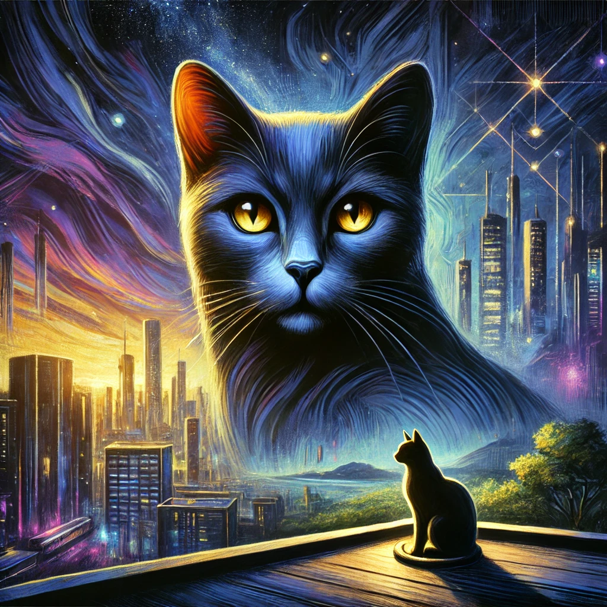

작가
베르나르베르베르
출판일
2018년
감상평에 대한 AI그림
인간사회를 고양이의 시선으로 바라보며 문명과 생존, 지혜에 대한 색다른 통찰을 제공한다. 인간중심적사고를 돌아보며 성찰을 유도한다.

감상평에 대한 AI평가
~~~~AI평가~~~~~
✨ 베르나르 베르베르의 고양이가 가진 핵심 메시지를 간결하면서도 정확하게 표현했다고 생각해요.
✨ 주인공인 고양이 '바스테트'의 시선을 통해 인간의 문명, 정치, 생존 방식이 얼마나 비효율적이고 모순적인지를 보여주죠.
✨ 이 소설은 단순한 판타지가 아니라, 철학적 메시지를 담은 사회비판적 작품이라고도 할 수 있죠.